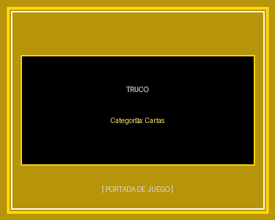
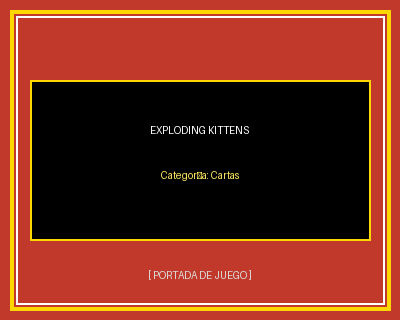

Truco
Tradicional juego de naipes jugado con baraja española. Se disputa por bazas y puntos mediante el engaño, las señas entre compañeros, el envido y la habilidad para cantar el truco.
Descargar Reglamento (.pdf)Portal de Reseñas y Reglamentos de Juegos de Mesa
Títulos dinámicos basados en naipes, mecánicas de faroleo y rondas rápidas.

Tradicional juego de naipes jugado con baraja española. Se disputa por bazas y puntos mediante el engaño, las señas entre compañeros, el envido y la habilidad para cantar el truco.
Descargar Reglamento (.pdf)
Juego dinámico y humorístico de cartas. Los participantes roban del mazo rogando no toparse con un gato explosivo mientras utilizan cartas de acción para pasar de turno o sabotear rivales.
Descargar Reglamento (.pdf)